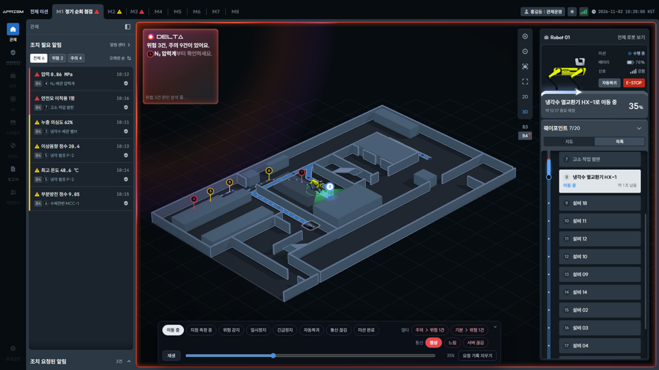
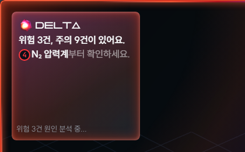
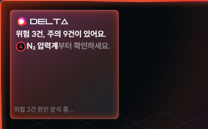
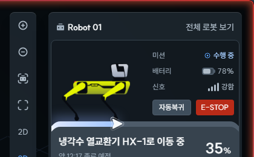
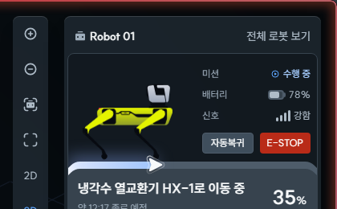
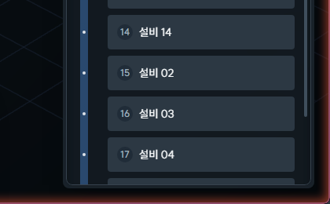
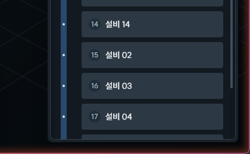
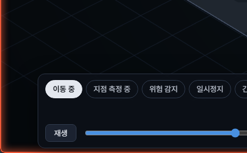
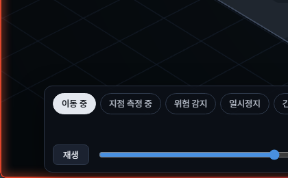

관제 위험 상태 테두리. 외부 컴포넌트에서 갈라져 나온 코드(테두리 색 얼룩 여덟 겹)를 빼고, 우리 코드(대각선 한 장 --edge-ring)로 다시 그림. 안으로 뛰는 선 한 쌍 · 모서리(Delta 자리) 빛 · 박자는 원래 우리 것이라 그대로. 맥박을 같은 순간에 멈춰 찍었음 — 왼쪽 예전, 오른쪽 지금.
움직이는 실제 화면: 관제 v7
전체
예전

지금
왼쪽 위 (Delta 자리 — 가장 밝음)

예전

지금
오른쪽 위

예전

지금
오른쪽 아래

예전

지금
왼쪽 아래

예전

지금
테두리 1px 색: 예전은 여덟 개의 방사 얼룩이 겹쳐 변마다 색이 들쭉날쭉, 지금은 왼쪽 위 기준 자리(#F05937)에서 오른쪽 아래 자두색으로 고르게 짙어짐. 변 위 색 차이 RGB 10~25 안팎
주의 상태 테두리도 같은 방식(금빛 → 탄 주황 · 자두)으로 바꿈. v6 · v7 주의 상태는 지금 테두리를 쓰지 않아 화면 변화 없음
안으로 뛰는 선(3 → 8px, 256ms 시차) · 모서리 빛 · 2초 박자 · 새 위험 3박 · 분광 파동은 그대로